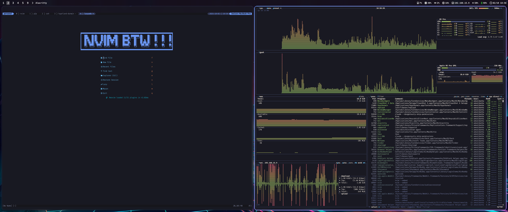
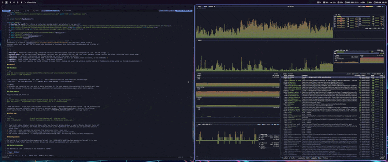

HYPRDARWIN
Hyprland, but for your Mac: tiling
Tiling, a status bar, glowing window borders and a plugin system, in one native app. No SIP changes, no glue scripts.
Riced on a real Mac
Neovim and btop tiled side by side, the bar across the top, the neon ring on the focused window. One app, no glue.


Watch it tile
Every new window takes its share of the screen. Focus moves with the keyboard, and the focused window wears the neon.
1 2 3 4 9
❯ hypr list-plugins
cpu | interval | running | 0 | 12%
clock | interval | running | 0 | 21:04
❯ ▌
Everything. One app.
What used to take a window manager, a bar, a border daemon and a folder of scripts.
TILING
AeroSpace's tree tiling, virtual workspaces and real multi-monitor support. No need to disable SIP.
STATUS BAR
One bar per screen: workspace pills, the front app, CPU, RAM, GPU, network, volume, battery, clock. Auto-hide and a notch panel.
BORDERS
A gradient ring around the focused window, a dim ring around the rest. Rounded, sharp on Retina, drawn by the app.
PLUGINS
Any executable that prints JSON lines becomes a widget. React to events, add click menus, run commands.
MOUSE
Focus follows the mouse. Hold alt and drag to move any window, Hyprland style.
ONE-COMMAND SETUP
hypr init applies the macOS settings, backs them up for undo, and writes a starter config.
Five tools → one
No more versions drifting apart, no more scripts gluing them together.
Install in 30 seconds
Homebrew installs the app, the hypr CLI, shell completion and man pages.
Plugins in any language
A folder with a manifest and an executable. HyprDarwin runs it, supervises it and draws what it prints.
# plugin.toml api = 1 exec = "./run.sh" mode = "interval" # or "stream" interval = 5 events = ["click", "wake"]
#!/bin/sh — run.sh pct=$(memory_pressure | awk '/free percentage/ {print 100-$5}') printf '{"icon":"\\uE266","label":"%s%%"}\n' "$pct" # {"run": "workspace 2"} runs a command # {"popup": [...]} adds a click menu
THE WIKI
From the first launch to a fully riced setup: tutorial, configuration, plugins and the CLI.